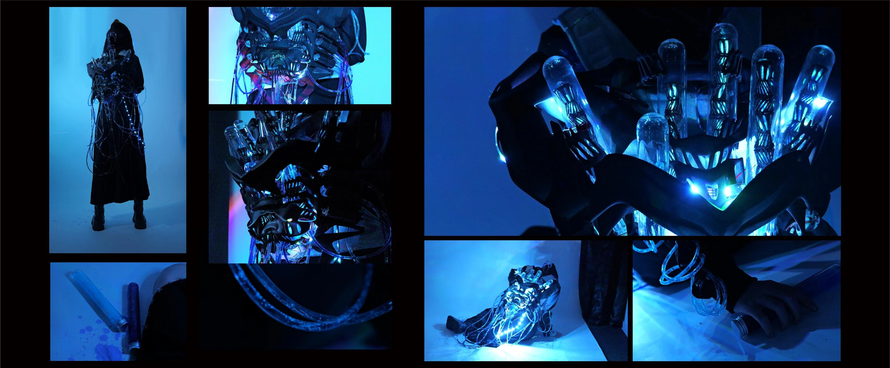
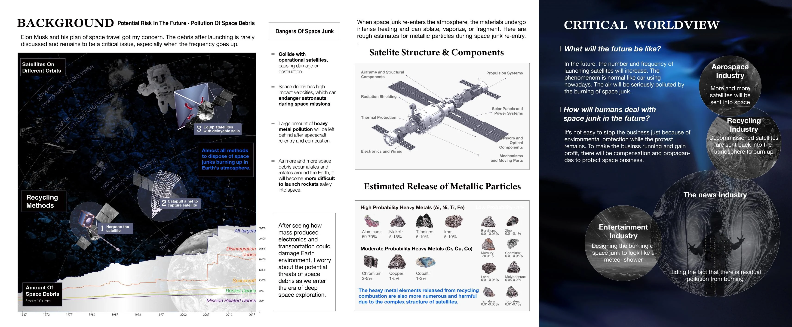
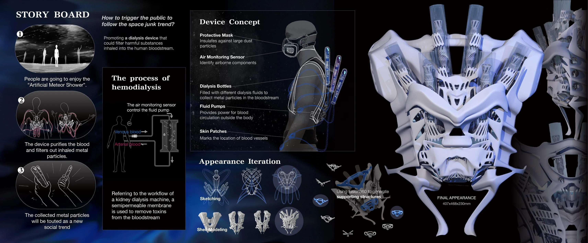
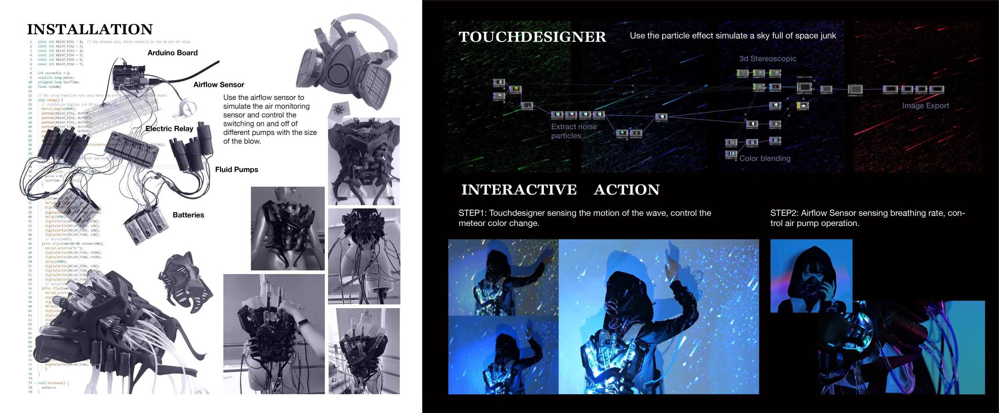

SPACE JUNK DIALYSIS
2025
A speculative dialysis machine that transforms orbital pollution into a bodily encounter. Airflow sensing and TouchDesigner connect the visitor’s gestures to a clinical, theatrical apparatus.
- Type
- Critical interaction design
- Role
- Concept, interaction, prototyping, visual direction
- Tools
- Arduino, sensors, TouchDesigner, 3D printing



